Grilla de 18×18 sobre el plano, decodificada
Las letras ocupan regiones; entre ellas, mezclas
En naranja, lo que no está en el font: 63 %
Sistemas de Inteligencia Artificial · TP5 · Grupo 4
1
32 caracteres de 5×7 píxeles. ¿Entran en dos números?
Aprender las 32 letras · Espacio latente · Letras nuevas · Denoising

Objetivo: reconstruir las 32 con a lo sumo 1 píxel mal, pasando por un latente de 2.

Pérdida: entropía cruzada binaria. Adam, η = 0,01, lotes de 32.
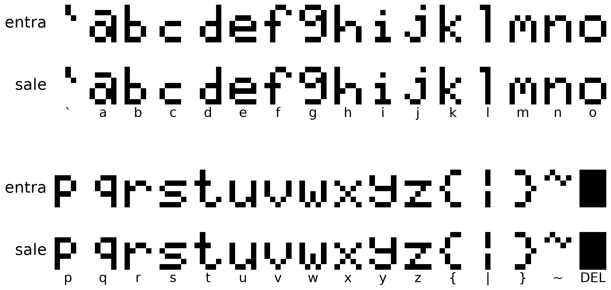
En rojo, los píxeles mal: uno en la u y uno en la v. Llega en la época 3.250, en 1,6 segundos.
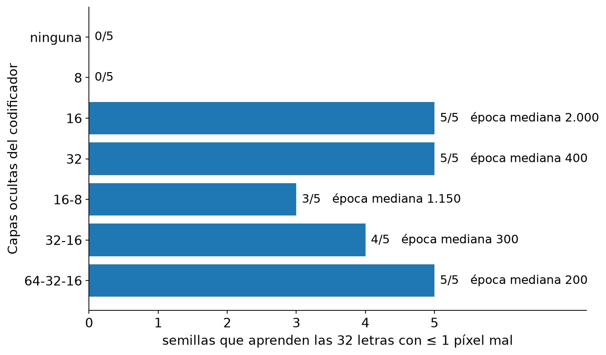
Más capas aprenden antes y más parejo: 64-32-16 llega en 200 épocas siempre; 16, en 2.100 ± 1.100.
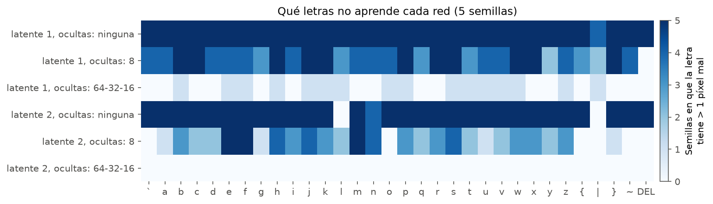
Con 8 neuronas ocultas, e, f y m fallan en las 5 semillas; con 32-16, casi ninguna.

2 es el mínimo. Con 3 o 5 dimensiones llega igual o un poco antes.
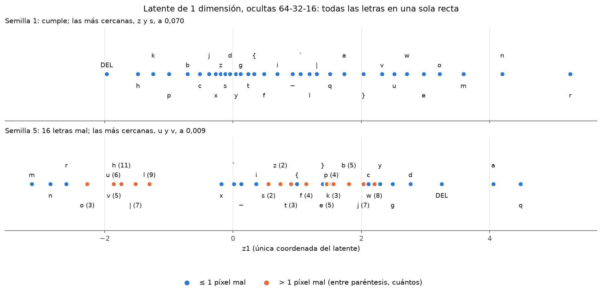
Cada letra tiene solo dos vecinas. k y h caen a 0,1 de distancia y la red no las separa.

Con momentum, RMSProp o Adam llegan las 32. La activación cambia poco: todas antes de la época 1.000.

Con 32-16, η = 0,01 sale del objetivo en el 14 % de los controles; con 0,003, en el 3 %.
Aprender las 32 letras · Espacio latente · Letras nuevas · Denoising
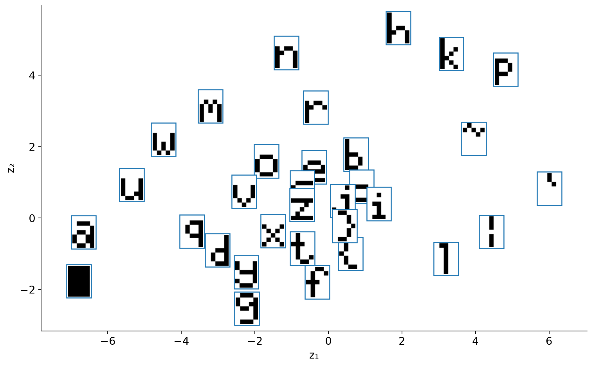
Vecinas: u–w, m–n, k–h, d–g, i–l. DEL, la única llena, queda sola.
Aprender las 32 letras · Espacio latente · Letras nuevas · Denoising
Grilla de 18×18 sobre el plano, decodificada
Las letras ocupan regiones; entre ellas, mezclas
En naranja, lo que no está en el font: 63 %
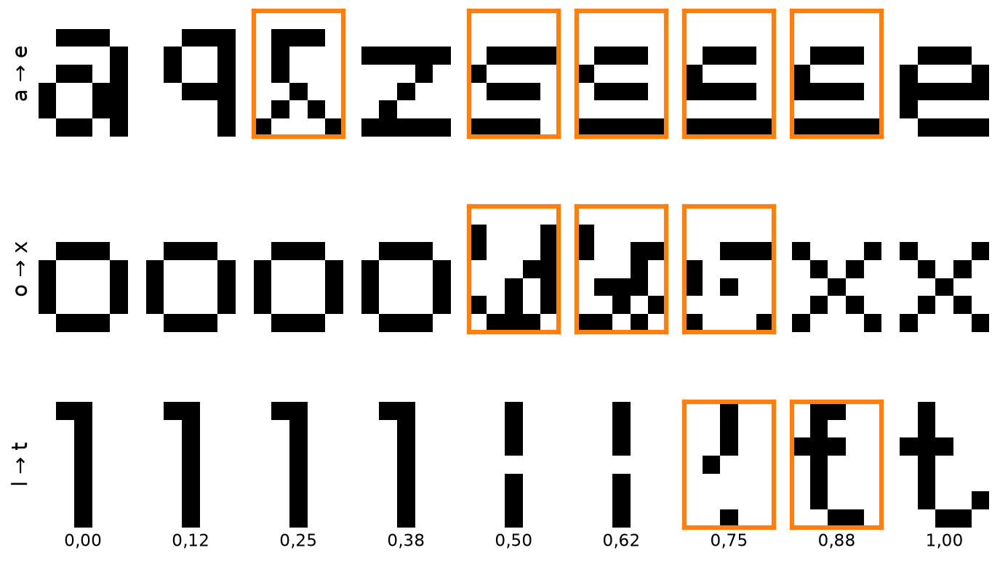
Recorrido en línea recta entre los códigos; en naranja, patrones fuera del font: 10 de 27 pasos.
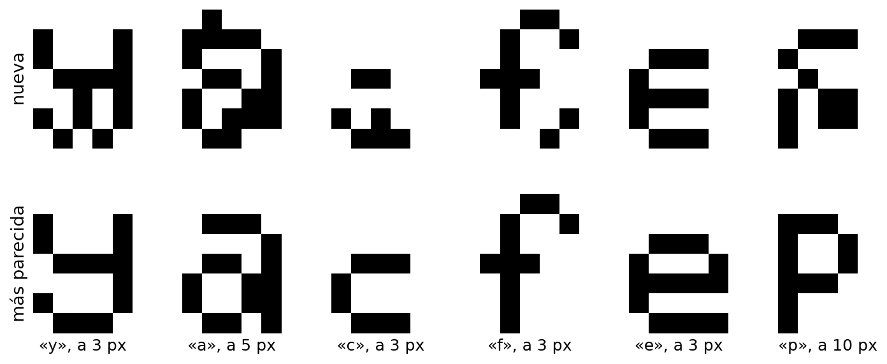
170 patrones distintos a 3 píxeles o más de toda letra, con cada píxel decidido.
Aprender las 32 letras · Espacio latente · Letras nuevas · Denoising
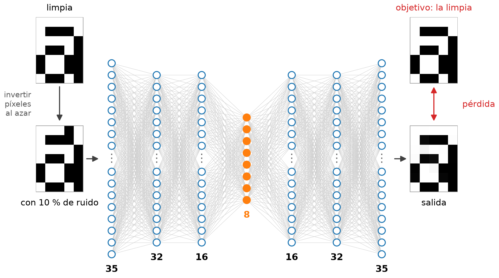
Misma red y misma pérdida. El ruido invierte cada píxel con probabilidad p y se sortea de nuevo en cada lote.

Elegimos 35 → 32 → 16 → 8, entrenada con 10 % de ruido: 0,5 píxeles mal con 10 %, contra 3,5 de la entrada.

Con 20 %, la m se vuelve otra cosa y la s cae en DEL: la entrada ya se parece más a otra letra.
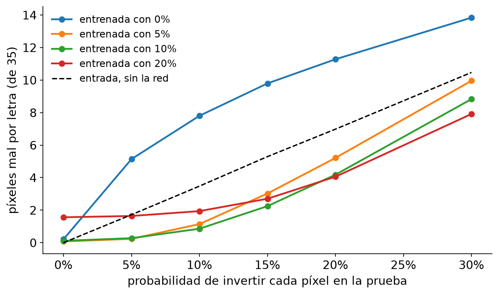
Con 10 % de ruido: 3,5 píxeles mal a la entrada, 7,8 con la red común, 0,9 con la entrenada con ruido.

Entrenada apagando píxeles, no sabe qué hacer con los que se prenden: 4,5 a 8,5 píxeles mal.
2
Notas de instrumentos reales. ¿Puede inventar una nueva?
Los datos · Autoencoder contra VAE · Generar

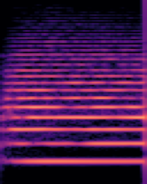


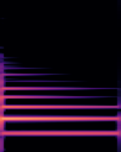

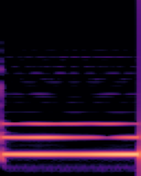


NSynth: un segundo a 16 kHz, notas MIDI 48 a 72, hasta 150 por familia.
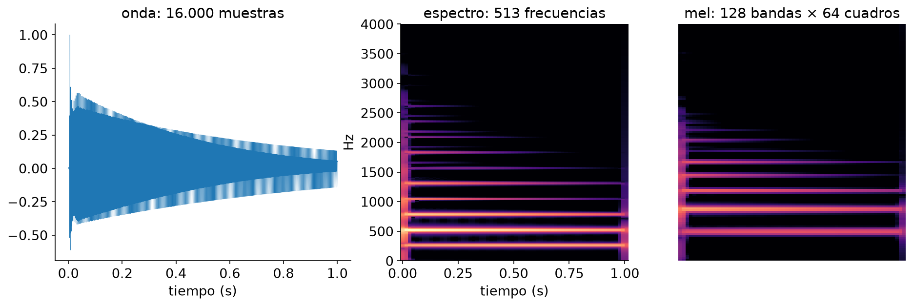
8.192 valores en [0, 1]: decibeles con 70 dB de rango
19,8
dB de distorsión en una nota de voz, sin red de por medio
14,0
invirtiendo las bandas sin valores negativos (NNLS)
7,3
con 128 bandas en lugar de 64
Las notas con muchos armónicos eran las peores: con 64 bandas, una banda aguda abarcaba varios armónicos.
Los datos · Autoencoder contra VAE · Generar
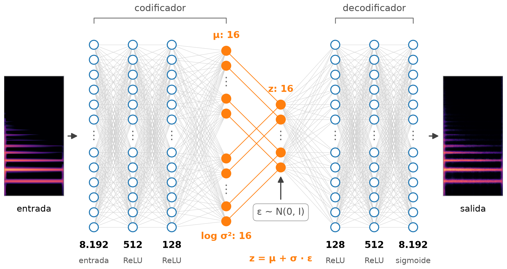
Pérdida: error cuadrático + 0,5 · KL. Adam, η = 0,001, 200 épocas: 6 minutos.
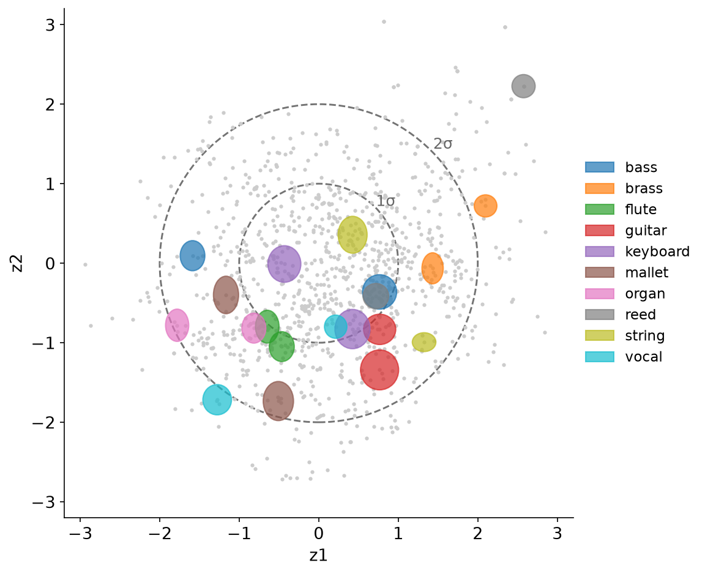
Cada elipse: lo que da el codificador para una nota
Desvío de cada nota: 0,16
Las medias se reparten con desvío 1, como N(0, I)

En color, las notas; en gris, puntos sorteados de N(0, I): lo que recibe el decodificador cuando generamos.
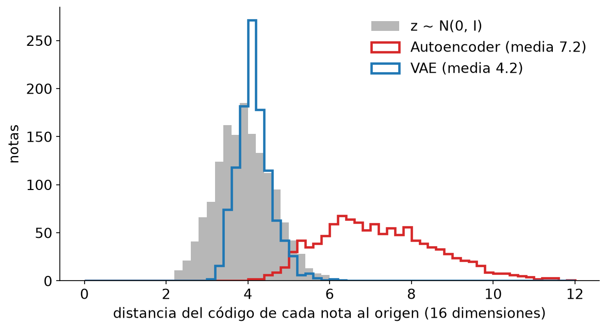
Distancia media al origen: puntos de N(0, I) 3,9 · VAE 4,2 · autoencoder 7,2.
Autoencoder


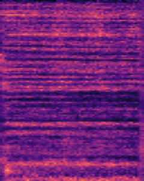
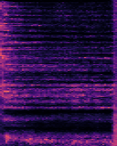
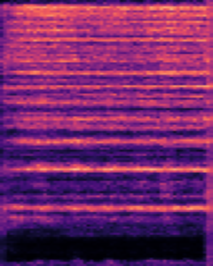
VAE


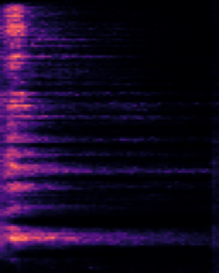
El autoencoder llena todas las bandas; el VAE da armónicos limpios, con la energía de los datos.
metal
guitarra
lengüeta
original
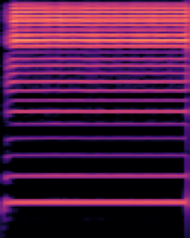

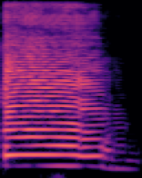
AE


VAE


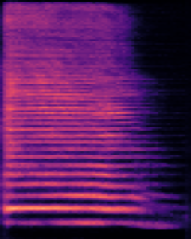

El AE gana en las 10 familias y en el 89 % de las notas
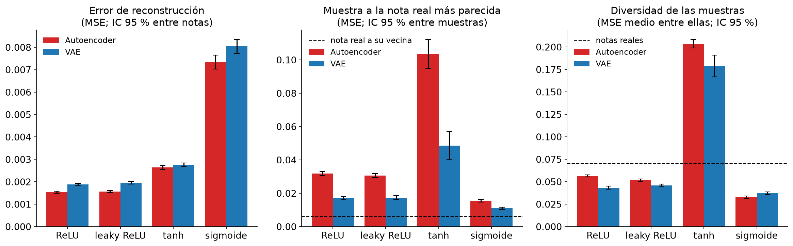
tanh da ruido; sigmoide, casi siempre la misma nota borrosa. El VAE gana con las cuatro.
Los datos · Autoencoder contra VAE · Generar
generada
la real más parecida
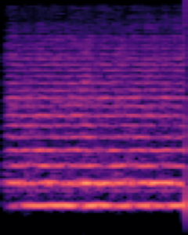


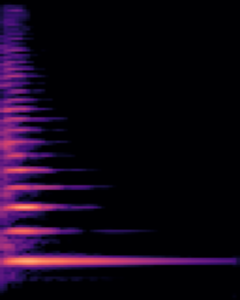
Cada una está 1,6 a 4,6 veces más lejos de su nota más parecida que una nota real de la suya.

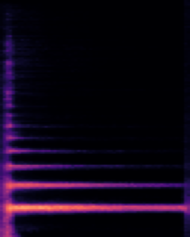
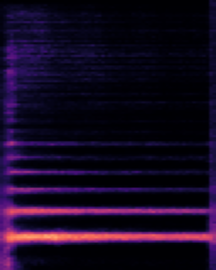
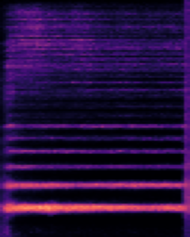


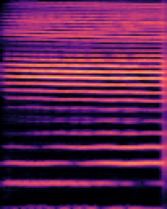

Ambas en do central: cambia el timbre, no la altura


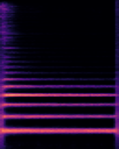

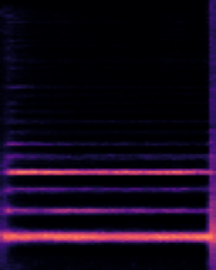
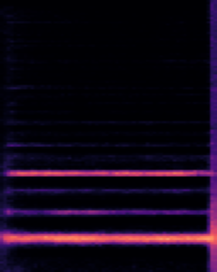


La caída se va alargando paso a paso
Extra

Todos los sonidos salen del decodificador del VAE. El ritmo, la afinación y los filtros los pusimos nosotros.
Resultado negativo

Entre las vecinas de una nota omitida, acierta 5 de 27. Mezclar los dos espectrogramas: 6 de 27.
A
Gráficos de respaldo para preguntas.
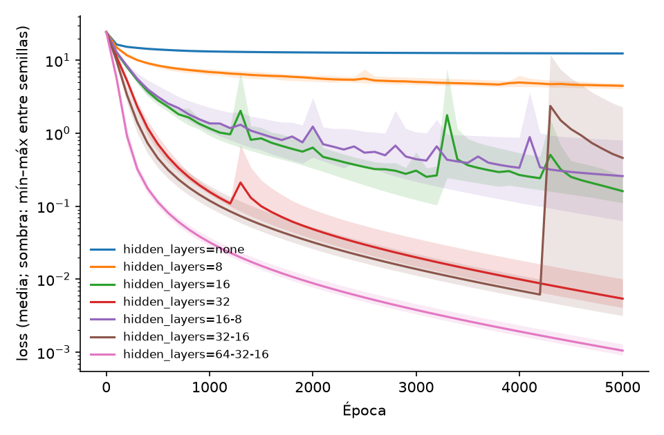


ReLU
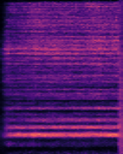


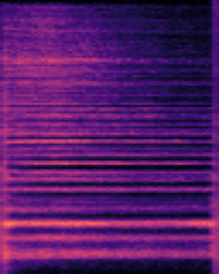
leaky ReLU


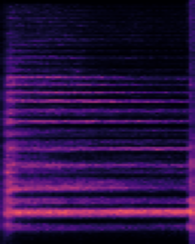
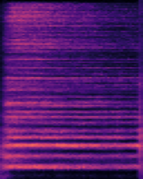
tanh

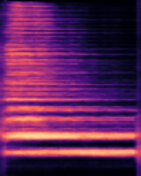
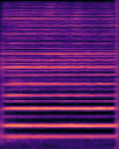

sigmoide

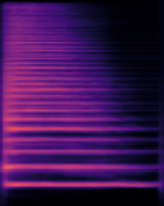
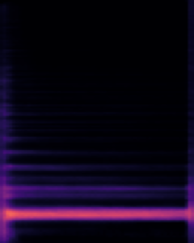